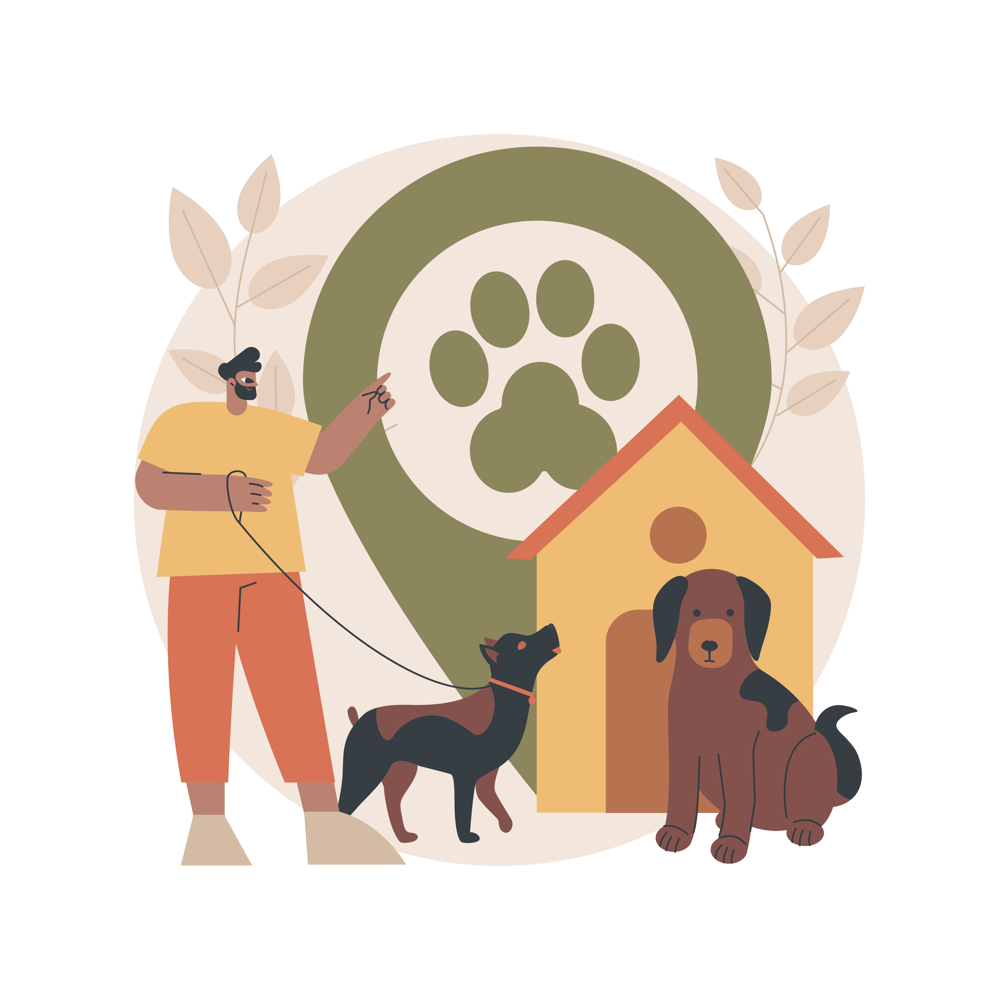

ЛОКАЦИИ

ул.Братя Бъкстон 97.
Бул. България 155
Ние сме тук, за да ви предложим висококачествена и балансирана храна за вашите кучета. Вижте по-долу информация за нашите продукти, полезни съвети за грижа за кучета и други полезни ресурси.
read moreНие сме специализирани в предоставянето на висококачествена и здравословна храна за кучета, която ще им осигури оптимално здраве и дълголетие. Нашата кучешка храна е изцяло произведена от натурални съставки и не съдържа изкуствени добавки или консерванти. Приготвяме я с грижа и внимание, като се стремим да предоставим най-доброто за вашето куче. Ние предлагаме разнообразие от вкусни и хранителни продукти за кучета от всички породи и размери. В нашия асортимент ще намерите суха и консервирана кучешка храна, както и лакомства за обучение и здравословни добавки..
Тук ще намерите информация за значението на правилната храна за кучетата. Ще разберете какви са основните хранителни нужди на кучето и как да се грижите правилно за вашето куче.
Сухата храна е лесна за съхранение и дозиране. Може да се съхранява за дълго време без да се разваля.Нашата суха храна еспециално формулирана за поддържане на здравето на зъбите, като помагат за премахването на зъбния камък и натрупването на плака.Сухата храна се предлага в широка гама от вкусове и съставки, което позволява на собствениците на кучета да избират храната, която най-добре отговаря на нуждите и предпочитанията на техните кучета.
По-добро хранително съдържание: Натуралната и органичната храна се произвежда от качествени съставки без изкуствени консерванти, оцветители или добавки. Това може да осигури по-добро хранително съдържание и да подобри общото здравословно състояние на кучето.
Консервираната храна често съдържа по-голямо количество протеини и мазнини в сравнение със сухата храна, което може да бъде особено полезно за активни или растящи кучета. За много кучета консервираната храна има по-интензивен и апетитен вкус, което може да е полезно при събуждане на апетита на избирателни или болни кучета. Консервираната храна често се използва като допълваща храна или лечебна диета за кучета със здравословни проблеми или след операции.
Грижата за кучето включва редица важни аспекти. За да се грижите правилно за кучето си, осигурете му подходяща храна и вода, предоставете му достатъчна физическа активност, редовно го гримирате и осигурете редовни посещения при ветеринарен лекар. Важно е и да социализирате кучето и да му осигурите обучение, за да се развият правилно и да бъдат добри спътници.
Грумингът е важен за здравето и благополучието на кучето ви.Обяснение за важността на редовното четене на козината на кучето. Подчертаване на ползите от премахването на мъртвата козина, предотвратяване на заплитания и съдействие за поддържане на кожата здрава.Важно е да използвате правилните инструменти за четене на козината, като различни видове четки и гребени в зависимост от типа козина на кучето (къса, дълга, къдрава и др.).
Хигиената на кучето е от съществено значение за поддържането на неговото здраве и благополучие.Почистването на ушите и очите на кучето също е важно, като трябва да се използват подходящи почистващи продукти и техники. Редовната грижа за зъбите и ноктите на кучето е също от съществено значение и може да се постигне чрез четене на зъбите и рязане на ноктите с подходящи инструменти и техники.
ул.Братя Бъкстон 97.
Бул. България 155